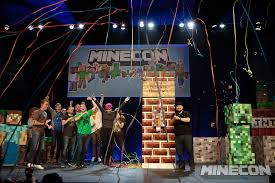
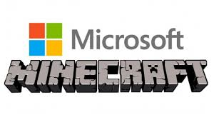
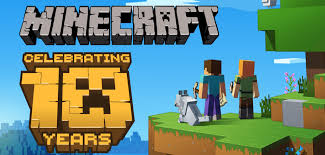
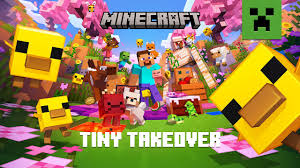

Markus "Notch" Persson lança a primeira versão do jogo. Ainda rudimentar, mas já com a jogabilidade sandbox que conquistaria o mundo.

O jogo entra em fase beta com atualizações frequentes. A comunidade começa a crescer rapidamente.

Minecraft é lançado oficialmente na MineCon 2011. O End, o Ender Dragon e conquistas são adicionados ao jogo completo.

A Microsoft adquire a Mojang por US$ 2,5 bilhões, um dos maiores negócios da história dos games.

Com mais de 300 milhões de cópias vendidas, Minecraft é usado inclusive como ferramenta educacional ao redor do mundo.

Apesar de diversas polêmicas envolvendo a conduta da empresa diante das atualizações, Minecraft se mantém estável e com planos de pelo menos 15 anos de continuidade.